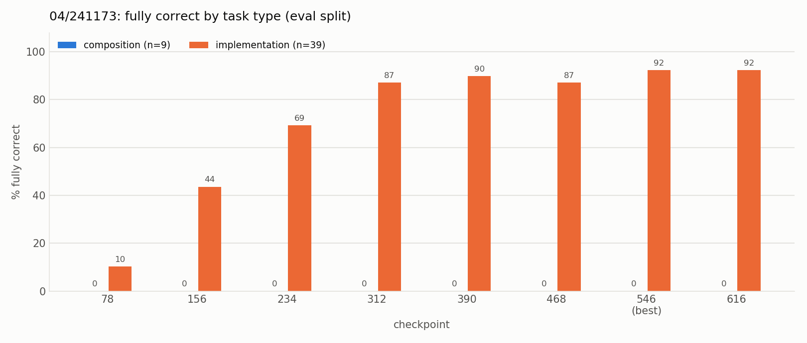
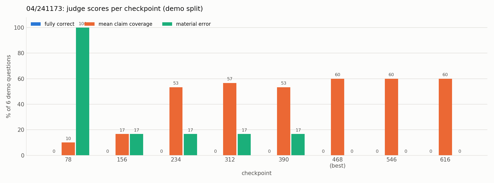

Experiment 04: Training multi-topic answers directly
Tests with OPALX repo slice · field-solver / space-charge slice, 39 topics, judged by Claude Opus 5.5 against required and forbidden claims (README, source files)
1Summary
- Idea
- Add composition rows to 02: broad questions over 2–4 related topics whose answer is the topics'
mechanismparagraphs joined verbatim, to teach answering questions that span several topics. - Upshot
- Does not help: compositions stay at 0 of 9 and single-topic questions get slightly worse. The demo coverage gain (0.23 → 0.60) comes from copying training compositions that overlap with the demo.
2Setup
- Model
unsloth/Qwen3-8B-unsloth-bnb-4bit(Qwen3-8B, 4-bit), LoRA r = 32, α = 32, dropout 0, on all seven projections (q, k, v, o, gate, up, down); AdamW 8-bit, lr 1e-4 linear, 6 warmup steps, batch 8, weight decay 0.001, max sequence length 2048, seed 3407, loss on the answer tokens only- Configurations
- Alpaca format,
config.yamlas 02: 8 epochs, 77 steps per epoch, 616 steps, checkpoint every 78 steps. - Training data
- All 468 rows of 02 unchanged, plus 144 composition rows: 36 hand-picked groups of 2–4 related topics (
experiments/04/compositions.py) × 4 hand-written questions. Answer = the group'smechanismanswers joined verbatim, no new text. Groups whose topic set equals that of an eval, test or demo question were removed (3 of 39). 612 rows, 75 distinct answers; mean composition answer 223 words, so the answer tokens per epoch almost double.
3Hypothesis
02 explains single topics well but fails on questions that span several topics. Training multi-topic answers directly, without new facts, should teach the model to answer a broad question with several fitting paragraphs. Then the eval compositions and the demo briefings improve while the single-topic questions stay at 02's level. Not a matched-budget ablation, and the groups were written after looking at the eval failures.
4Results
| checkpoint | fully correct | single-topic correct | mean claim coverage | composition coverage | material errors |
|---|---|---|---|---|---|
| 78 | 4/48 (8%) | 4/39 (10%) | 0.137 | 0.04 | 36/48 (75%) |
| 156 | 17/48 (35%) | 17/39 (44%) | 0.398 | 0.17 | 5/48 (10%) |
| 234 | 27/48 (56%) | 27/39 (69%) | 0.642 | 0.35 | 2/48 (4%) |
| 312 | 34/48 (71%) | 34/39 (87%) | 0.807 | 0.34 | 2/48 (4%) |
| 390 | 35/48 (73%) | 35/39 (90%) | 0.786 | 0.23 | 0/48 (0%) |
| 468 | 34/48 (71%) | 34/39 (87%) | 0.760 | 0.20 | 0/48 (0%) |
| 546 (best) | 36/48 (75%) | 36/39 (92%) | 0.802 | 0.20 | 0/48 (0%) |
| 616 | 36/48 (75%) | 36/39 (92%) | 0.802 | 0.20 | 0/48 (0%) |
| experiment | checkpoint | fully correct | mean claim coverage |
|---|---|---|---|
| 02 | 312 | 0/6 | 0.233 |
| 04 | 468 | 0/6 | 0.600 |

Compositions stay at 0 at every checkpoint. Their claim coverage peaks at 0.35 at checkpoints 234–312, as in 02, and then drops to 0.20 as the model falls back to one memorized paragraph. Single-topic questions reach 36/39 (02: 39/39).

The demo coverage rises to 0.60, but 5 of the 6 best demo answers are verbatim copies of one training composition.
5Conclusion
It does not help: the 9 eval compositions are all still wrong, and the model gets worse on single-topic questions. Two of the new single-topic failures are topic mix-ups (eval-005 gets the cg_recognized answer, eval-022 the p3m_short_range answer): seeing each paragraph inside 1–5 groups seems to blur which topic a question is about. The demo gain comes from looking up stored answers, not from composing new ones. The exclusion rule only removed groups whose topic set equals a benchmark question's, so groups fitting inside the 5–7 topics of a demo question stayed in and cover most of its topics. The demo is contaminated for 04. Every eval composition answer is a single training paragraph, often of a topic that is not in the question.
Next steps: a demo set written without seeing the groups, and a metric for the share of answers that copy a training answer verbatim.
Related: experiment 02 (the base data) · experiment 05 (can the model compose facts at all?) · experiment 07 (chain of thought for compositions)